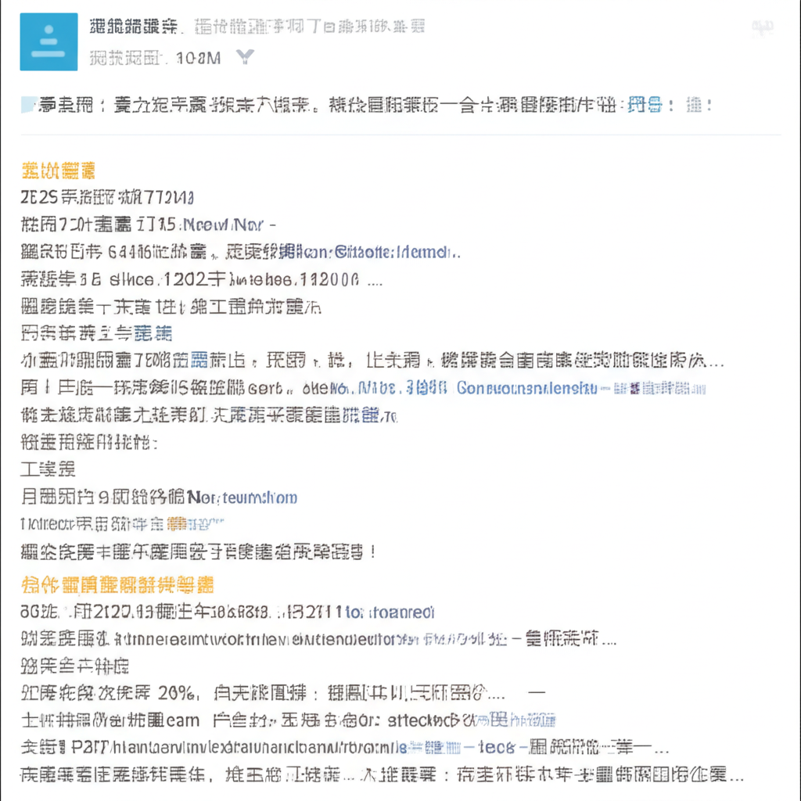

# 投資、生活與行事曆：近期網路資訊整理
## 引言
這篇文章整理了近期的網路資訊，涵蓋投資理財、股市動態、生活資訊、活動訊息等方面。透過對這些資訊的梳理，我們得以一窺近期熱門話題與趨勢，為投資決策和生活規劃提供參考。
## 主體內容
### 第一點：投資理財與股市動態
從提供的資訊來看，投資理財和股市動態是近期的熱門話題。
* **ETF 配息行事曆:** 永豐金證券豐雲學堂和相關資訊揭示了5月份ETF的配息行事曆，包含國內指數股票型、跨國股票型及債券型ETF的除息日和殖利率資訊。這對於追求穩定收益的投資者來說，是重要的參考依據。
* **股東會紀念品:** 玩股網和永豐金證券的資訊都關注了2025年股東會紀念品的話題，提供了紀念品發放規則、零股寄單、最後買進日等資訊，吸引了大量散戶的關注。
* **股市新聞:** Anue鉅亨的股市新聞提供即時的市場資訊，例如個股的股價變動和重要的政經事件影響（如美對等關稅與台灣以色列的經貿關係）。
### 第二點：生活資訊與休閒娛樂
除了投資理財外，生活資訊和休閒娛樂也受到關注。
* **Yahoo奇摩玩樂:** Yahoo奇摩玩樂頻道提供豐富的旅遊資訊和活動行事曆，特別是5月生日優惠餐廳總整理，吸引了大量使用者。
* **女人我最大:** 女人我最大的網站提供生活時尚資訊，包含美妝、穿搭等，同時也預測了2026年的連假，方便讀者提前規劃。
* **怪物彈珠:** 怪物彈珠的官方網站提供了最新的遊戲資訊，吸引了遊戲玩家的目光。
### 第三點：行事曆與活動訊息
各機構的行事曆與活動訊息也值得留意。
* **臺中市政府教育局:** 臺中市政府教育局的網站公布了最新的教育活動訊息，例如05/07的臺中市相關活動。
* **國立屏東科技大學圖書與會展館:** 國立屏東科技大學圖書館提供了圖書館的開放時間、活動報名等資訊。
* **Taiwantrade 台灣經貿網:** 台灣經貿網提供了商業活動的行事曆，幫助企業掌握最新的商業資訊。
## 結論
總而言之，近期網路資訊主要集中在投資理財、生活資訊和活動訊息方面。投資者可以關注ETF配息和股東會紀念品等訊息，生活上可以參考旅遊和美食資訊，同時也要留意各機構的行事曆，以便掌握最新的活動資訊。透過對這些資訊的整合和分析，我們可以更好地規劃生活和投資，做出更明智的決策。